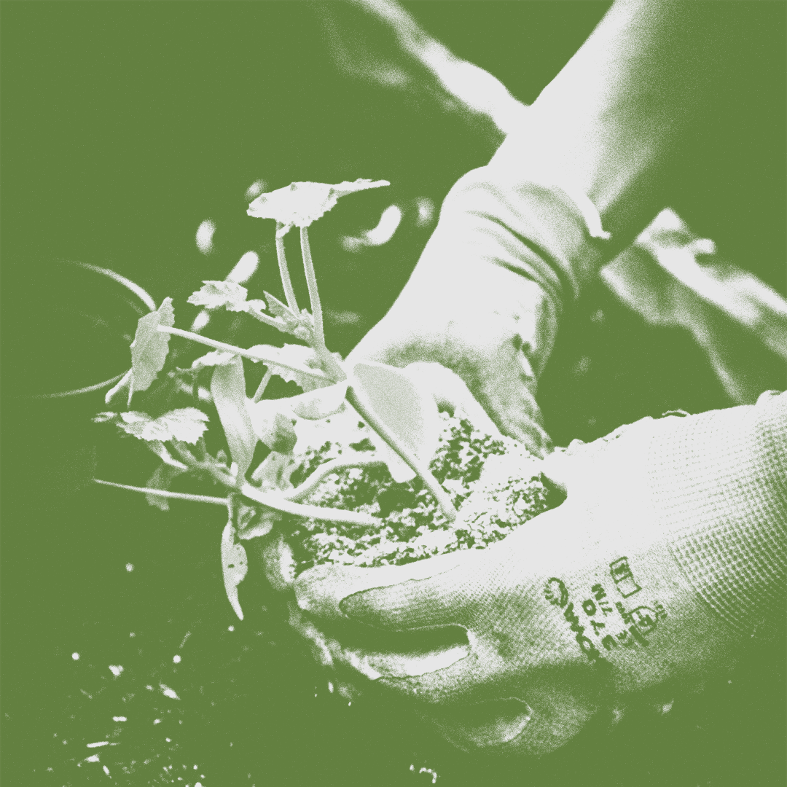

A backyard farm is the entirety of your food production efforts–plant, animal, and otherwise. Put simply, the backyard farm is a resource-efficient combination of guerilla food production zones, that are each optimized for their highest and best uses. Have a piece of property that is naturally more shady and has acidic soil? Put blueberries there. Have a south-facing wall that gets full sun and is tough to irrigate? Plant sunflowers up against it. Live in a climate that gets late season freezes? Save your fruit by planting tree varieties that bloom late. Have a pest problem? Get a few chickens to devour em. These and a million other simple solutions provide extremely practical ways to maximize your backyard farming. This approach isn’t anything terribly new or cutting edge. These are things that our ancestors knew and practiced as a matter of survival. Backyard farming is the practice of utilizing any kind of space you have in order to grow and produce your own food. Whether you have a large or small yard, or even a balcony, you are able to have a backyard farm.
Backyard farming is about maximizing your space to your benefit, growing what you think is right for yourself or your family, and enjoying being outside and contributing to a greener and healthier Earth.
You can be a backyard farmer and only grow one type of plant. You can be a backyard farmer and have animals, making your home a homestead. There isn't a wrong way to be a backyard farmer.
Food cost concerns and the desire for higher quality food has fueled the rise of backyard farming. There are an estimated 20 million acres of lawns in North America. We spend millions of dollars a year growing a mono-crop (grass) and pouring chemicals on it to make it greener and kill unwanted plants. If we all farmed our yards, even in small container gardens, we would greatly increase the availability of local food and reduce food costs.
Some families are backyard farming simply to grow food for themselves. These small scale urban farms range from simple raised bed gardens to elaborate mini-homesteads with various types of animals, bees and ponds.
Any family can start some kind of small-scale backyard farm. This may just be a container garden or larger raised bed garden. It could even include backyard chickens or a beehive!
Environment: Gardens are important to the planet because, despite being human-made, they represent a natural environment. Plants and trees grow there, taking in carbon and releasing oxygen. The roots of these plants stabilize the soil and filter water. Municipal gardens and national parks become safe havens for all manner of wild creatures that might have been otherwise displaced by the endless urban sprawl of the modern world. Birds, bugs, and bees — especially honey bees — are essential to the lifecycle of the world at large. Bees are one of the most important pollinators in this group but they aren’t the only ones. Your backyard garden is bound to have its own native pollinators and your garden is a great way to coax them back into your life. They’ll help your flowers look nicer, keep your perennials coming back, and help your vegetable garden to flourish.
Community: If you live in an urban or suburban area but lack the space for a backyard garden, you may not be alone. Community gardens are a great way to build togetherness within a community. Working together to split responsibilities, upfront costs, and the fruits of your labor, can help you understand and appreciate your neighbors in ways you might not have thought possible.
Personal Life: Your health, your frame of mind, your community, and the environment — if those are not enough reasons for why gardening is important, we have a few more to give you. Gardening can also be important for your wallet, nutrition, and environmental footprint.
By growing your own sustenance, your diet becomes more sustainable, since your food won't have to travel more than a few feet to get to your plate (as opposed to store-bought produce, which can sometimes be flown in from other countries). If your thumb is particularly green, you’ll probably save more money than you realize by harvesting your own fruits and veggies — and by growing your produce organically, it could be healthier than the conventional produce you may otherwise buy at the store.
Family: On top of all that, gardening is a great hobby that you can share with your children. Teaching them to nurture a living thing and to be responsible for their own segment of the environment are great lessons to pass down. My own grandparents have imparted their gardening secrets through the generations and those lessons have taught me much about patience, preparedness, and the nature of nature in my own backyard.
It begins with an assessment of your situation and food goals.
Local Climate
Perhaps the biggest thing to think about is climate. What is the biggest limiting factor of your climate? Is it generally more hot and dry, or cold and wet? Or you may wind up in a place like the American south that’s hot and wet. No matter what your climate, what are the all-star, well-adapted plant varieties in your area? Get a hold of your local state extension office, and jump on local Facebook groups. When you’re driving around town, pay attention to the “weeds” that are growing by the side of the road. Remember, these are plants that aren’t getting any special fertilizing, watering, or anything else. Chances are, there are probably a few of these “weeds” that are edible, medicinal, or otherwise useful in your food forest.
Free or Low-Cost Resources
If you are doing food production on a smaller footprint, you probably won’t be able to just haul in an excavator to dig you a pond, or create some Walipini greenhouse in your front yard. But, your smaller, urban or suburban setup also comes with some built in advantages. And being the guerrilla farmer that you are, you need to make use of any and all resources you have at your disposal. Are there places where you can get free/discounted supplies in town? Do you have access to manure that can be used for fertilizer? Any mulching materials? What about discounted trees or shrubs? In many areas, nurseries will significantly discount trees and shrubs towards the end of the season. I have also found that several municipalities will offer discounted wood chips, soil, and mulch to residents. Stretch your dollars by taking advantage of these kinds of things! Another thing to take stock of are any food producers that are already on your property. You may already have some great trees or animals on your property that can contribute significantly to your homestead. If so, count this as a blessing, and don’t take it for granted. Even if it might not be the exact choice you would’ve made (in species, location, etc), don't thumb your nose at anything that’s already in place–especially if it’s currently producing.
After your homestead has been established for a few years and you’re producing other food, you can always get rid of or move something to a new location, but until then, we always advise people to keep the producers, even if they’re ugly or in a less-than-ideal location. Think about your ancestors–would they have ripped out a productive fruit tree, just because the fruit was smaller or on the wrong side of the house?
Zones of the Backyard
Where are the best spots to grow things on your site? Where are the best spots for your critters? What about your fish pond? Bees? Because you aren’t limited by the constraints of large machinery, you can produce food anywhere you want. Don’t pigeonhole yourself by thinking that you have to have 1 “garden”, in a 16′ x 20′ plot somewhere. Your food production can take place in 15 different areas on your property, and you can grow 10 different things in each of them.
When it comes time to create the layout of your food production however, priority should be given to:
What Food to Produce
Proteins, Fats, and Carbs — The Macronutrients
As was mentioned above, it’s important to be really sensitive to your climate, and which plants and animals are “native” to it, or at least well-adapted to it. Apart from that however, the backyard farm of a true self sufficient homestead should be focused first on keeping you alive. Macronutrients. Proteins, fats, and carbohydrates. Yields with calories. If you think about it, a small flock of regular-producing chickens, can basically feed a family 1 meal a day with their eggs. If you figure 3 meals a day (which I understand isn’t necessarily gospel), this means that in rough numbers, those chickens have made you 33% self sufficient. I understand, there are plenty of conditions and disclaimers that could be stated here, but this is essentially how you need to be thinking about it. Nut trees are another excellent and long-lasting source of fats and proteins. They are often overlooked, because they aren’t the easiest things in the world to harvest, shell, and eat, but they have been a mainstay of many civilizations and really shouldn’t be overlooked on your homestead either. Potatoes are another great source of macronutrients. They can be grown in lots of climates, and if harvested properly, store extremely well (up to a year!). For all the flack they catch for being white carbs, the simple truth is that they can keep you alive. Squash, beans, sweet potatoes, fruit, corn and other grains, all provide a great source of macronutrients, that can keep you alive. Cattle and other large animals are obviously great sources of macronutrients as well. Remember, just because something is a macronutrient, doesn’t mean you have to grow it if you absolutely hate it. Find a few of these that you can learn to grow, preserve, and store, and you’re on your way towards food security.
High Value Fruits and Vegetables
The next type of food that you should think about in your backyard farming is food that is expensive to buy at the stores. Producing these foods will save you money, and they could also be good items to trade with your neighbors for things you don’t have. Fruits are a really good example of this. Watermelon, cantaloupe, honey dews, crenshaws, and other melons are great. Peaches, apricots, plums and other stone fruit. Berries, apples, pears, and anything else that’s sweet and juicy is a great candidate here. Valuables could also include things like microgreens, or even duck eggs. Anything that your family likes to eat, that is a little bit expensive. Remember, the goal of homestead production isn’t to get rich by selling a giant crop of something, but to help you be self-sufficient. There’s nothing wrong with growing and selling food for a living, but speaking strictly, that’s “market farming”, we’re talking about backyard farming.
Vegetables, Herbs, Mushrooms, and Other Micronutrients
Finally, think about your micronutrients. These are foods that are higher in vitamins, but not a particularly high source of calories. Think salad vegetables. Lettuces, tomatoes, spinach, kale, onions, water chestnuts, peppers, etc. Sprouting seeds with a simple kit is an awesome way to add incredible micronutrients to your diet, with just a few days and a small area on your counter. Edible herbs and mushrooms also fall into this category. They’re loaded with nutrients, but not calories. Micronutrients have an enormous amount to do with your overall health and well being. They are beneficial for the immune system, and digestion. They keep your body well-oiled and your organs functioning properly. They fall lower than macronutrients on the prioritized list of a homestead farm, but they are still critical.
Implementing Your Homestead Food Production
Keeping all this in mind, how do you actually do it? In phases. We recommend that you look at establishing your homestead food production as a 3-5 year process (although in truth, it could take longer). The first year is when you should think perennials. As a food producer, in order to be able to come close to sustaining yourself, you need to slant your efforts towards incorporating trees and other permanent systems whenever possible. Perennial shrubs, vines, fruit and nut orchards, and other permanent elements increase in value and yield every season. With these systems, time is the biggest determining factor. The sooner you get them in place, the quicker you get bigger yields. Think carefully and site your fruit and nut trees, berries, vines, and other shrubs. This gives them time to get their roots established and starts the clock on their time to bearing fruit (which will usually be 3-5 years, and 10 years before max production). The first year is also a good time to get compost, mulch, and other raw materials on site.
Lest anybody get the wrong idea, it’s still a good idea to grow vegetables and other more traditional “annuals”, but they will never come close to having near the ROI that permanent elements have, because by very definition, you have to re-establish them every year. Done correctly, permanent elements are the further towards the “set it and forget it” end of the food production continuum. The second year is a good time to begin layering in other shrubs, herbs, and annuals that make sense around your trees. If you are going to have smaller critters like chickens, ducks, meat rabbits, or aquaponic fish, this is a good year to think about getting them started as well.
Having a pair of good laying hens is an AWESOME way to ramp up your self-sufficiency. Chickens vary by the breed, but on the whole, they are low maintenance, and offer a long-lasting source of protein. Chickens give you multiple outputs–eggs, meat, and fertilizer. They’re also good for pest control, and working your land. In short, chickens are the “one size fits 95%” solution. By the third year, you will be well on your way to some decent food production. You have seen your property function in all 4 seasons a couple times now, and you have a good idea of the time constraints and work involved. This is a good year to introduce larger grazing animals (if this is part of your food production plan). Remember to still protect any trees that are young enough to be damaged or destroyed by a wanton grazer. Animals play a critical part in being truly self-sufficient, both for their outputs, and their ability to work the land. In addition to chickens, there are some great upsides to incorporating:
Each has an accompanying cost/benefit analysis, and a space requirement. Rabbits or aquaponically-grown fish can be done in just a few square feet, whereas something like a goat would require greater area, ducks require pond(s), and cattle require even more space still. Goats are handy for their edible outputs, and for their ability to accelerate land transformation. One animal that isn’t usually considered livestock in the traditional sense, but is nevertheless still really important to incorporate on your property is the honeybee. Bees are tremendous pollinators, and will do a lot to help you get earlier production, more production, and just overall better plant health. In addition to the pollination benefits, you get the added benefit of having their honey and wax that you can use for a variety of products. This is obviously a little bit of a simplistic overview, but in general, phases are how you need to do it. For the work involved, it’s simply not realistic to think about trying to get everything started at once. Remember, this is your homestead. Hopefully, you aren’t going anywhere for a while. It’s better to take your time being thoughtful and observing, than rushing into more than you can handle, getting burned out, and having a bunch of stuff fail.
Food Preservation — An Important Piece of the Equation
While the real goal of food self-sufficiency is to be able to produce a majority of your calorie consumption, it’s a difficult thing to put into practice, simply because we like to eat! By the time we’re old enough to tie our shoes, we have developed palettes that are acutely aware of all kinds of wonderful and far off foods, with special ingredients, processing, and high dependence on monoculture farming. Food independence is an exercise in both learning to produce more varieties of food, and eat fewer. It also takes time to get food yields that will sustain you. A fruit and nut orchard isn’t exactly something that you can flip the switch on. But by combining area-intensive permaculture practices with intelligent site design, you really can get close.
One thing that you can do to close the loop between your food storage and the food you are producing on your property, is to learn some food production methods.
While there are a variety of ways to do this, canning and dehydrating are 2 of the more easy and low tech ways to do this. Learning to do these will allow you to preserve some of your own harvest till later in the year, when food wouldn’t otherwise have been able to be grown.
Hot water bath canning will allow you to bottle up and preserve things with a high acid content, such as tomatoes, apricots, salsa, and many other fruits. Pressure canning allows you to store meats, vegetables, and pretty much everything else (contingent upon how long the food itself will stay good for).
Dehydration of certain foods can be super low tech—like putting fruit on screens in the sun to naturally dry. You can also find a bunch of commercially available food dehydrators, which will give you greater control over the process and shorter dry times.

Even if you live in a tiny apartment, you should be able to grow some plants. In addition to typical houseplants, certain herbs, fruits, and vegetables can thrive in an apartment garden. Start with just a few containers as you hone your gardening skills. Factors, such as access to sunlight and the sheer weight of your containers, need to be taken into consideration. Here's how to start your apartment garden off right.
While some plants are more hardy and forgiving to beginner gardeners than others, all plants have specific growing needs that you must meet. Here are some elements to know as you're choosing plants to grow in your apartment garden:
Best Plant Choices for Apartments
You can grow just about any plant in a container to a certain extent. For instance, a full-size apple tree might be out of the question, but there are skinny columnar varieties that can fit in a 1-square-foot corner of your balcony. Think about what you enjoy eating, and then choose a few types of plants to try out for your apartment garden. You can start with seeds, which offer more variety and are cheaper. But small nursery plants will get your garden established sooner.
Apartment Garden Care
There are certain tasks that you can expect to tend to regularly in your apartment garden, including:
Apartments don’t always offer vast amounts of space to indulge in gardening. But there's bound to be a sunny corner where you can test your green thumb and enjoy the fruits of your labor.